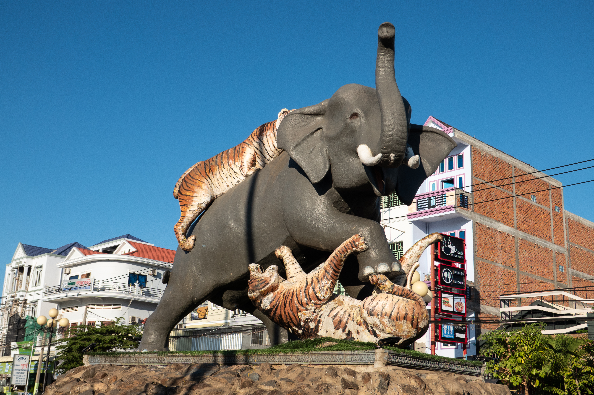

អំពីខេត្តកំពង់ធំ
ខេត្តកំពង់ធំ ស្ថិតនៅភាគកណ្ដាលនៃព្រះរាជាណាចក្រកម្ពុជា និងជាខេត្តដែលមានផ្ទៃដីធំជាងគេ ក្នុងចំណោមខេត្តនៅតំបន់វាលទំនាប។ ខេត្តនេះមានភាពល្បីល្បាញដោយសារប្រាសាទបុរាណ សម្បូរព្រៃគុក ដែលជាបេតិកភណ្ឌពិភពលោករបស់អង្គការយូណេស្កូ។ កំពង់ធំក៏ជាខេត្តដែលមានសក្ដានុពលខ្ពស់លើវិស័យកសិកម្ម និងទេសចរណ៍វប្បធម៌ផងដែរ។
ប្រវត្តិសង្ខេប
ខេត្តកំពង់ធំមានប្រវត្តិយូរលង់តាំងពីសម័យចេនឡា និងជាទីតាំងនៃរាជធានីបុរាណ ឥសានបុរៈ។ ប្រាសាទសំបូរព្រៃគុកដែលសាងសង់នៅសតវត្សទី៧ គឺជាភស្តុតាងដ៏សំខាន់នៃអរិយធម៌ខ្មែរបុរាណ។ បច្ចុប្បន្ន ខេត្តនេះនៅតែរក្សាបាននូវបេតិកភណ្ឌប្រវត្តិសាស្ត្រ និងវប្បធម៌ដ៏មានតម្លៃ។
កន្លែងទេសចរណ៍សំខាន់ៗ
- ប្រាសាទសំបូរព្រៃគុក
- ភ្នំសន្ទុក
- បឹងស្ទឹងសែន
- វត្តកំពង់ធំ
- សហគមន៍អេកូទេសចរណ៍បារាយណ៍
- ផ្សារកំពង់ធំ
ទីតាំងភូមិសាស្ត្រ
ខេត្តកំពង់ធំ ស្ថិតនៅភាគកណ្ដាលនៃប្រទេសកម្ពុជា និងមានព្រំប្រទល់ជាប់ ខេត្តសៀមរាប ខេត្តព្រះវិហារ ខេត្តក្រចេះ ខេត្តស្ទឹងត្រែង ខេត្តកំពង់ចាម ខេត្តកំពង់ឆ្នាំង និងបឹងទន្លេសាប។ ទីតាំងភូមិសាស្ត្រនេះបានធ្វើឱ្យខេត្តកំពង់ធំ ក្លាយជាតំបន់សំខាន់សម្រាប់វិស័យកសិកម្ម ការដឹកជញ្ជូន និងទេសចរណ៍ប្រវត្តិសាស្ត្រ។